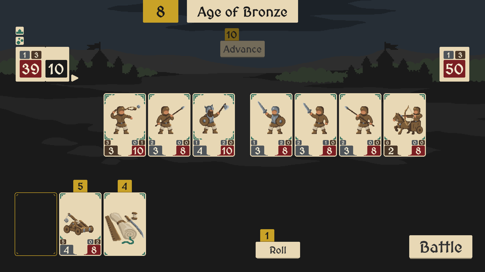

Published by FiveHeadGames

Hillforts is a strategic medieval auto-battler that blends
deck-building mechanics with tactical army management.
Developed by FiveHeadGames, the game puts players in command
of a growing force, where every decision from unit upgrades
to technological advancements shapes the outcome of battle.
Build and customise your army using a variety of cards,
research powerful upgrades, and prepare your forces before
sending them into automated combat. Victory depends on smart
preparation, effective unit synergy, and adapting your strategy
to overcome enemy defences.
With its pixel-art style and quick, engaging sessions,
Hillforts offers a focused tactical experience where
planning is just as important as execution.
Whether you're experimenting with new strategies or
refining your approach, each run provides a fresh
challenge as you attempt to siege and conquer enemy strongholds.
Created by 5Head Games. Follow them on social media or support their work.